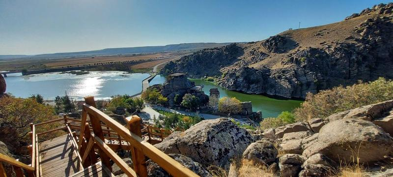
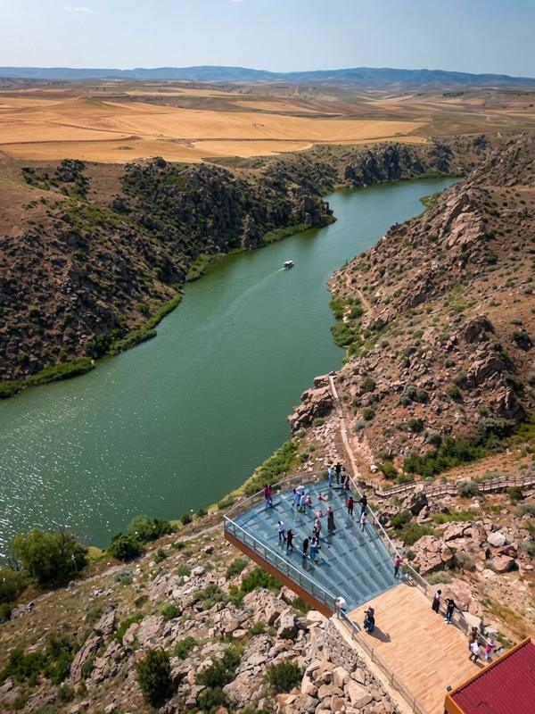
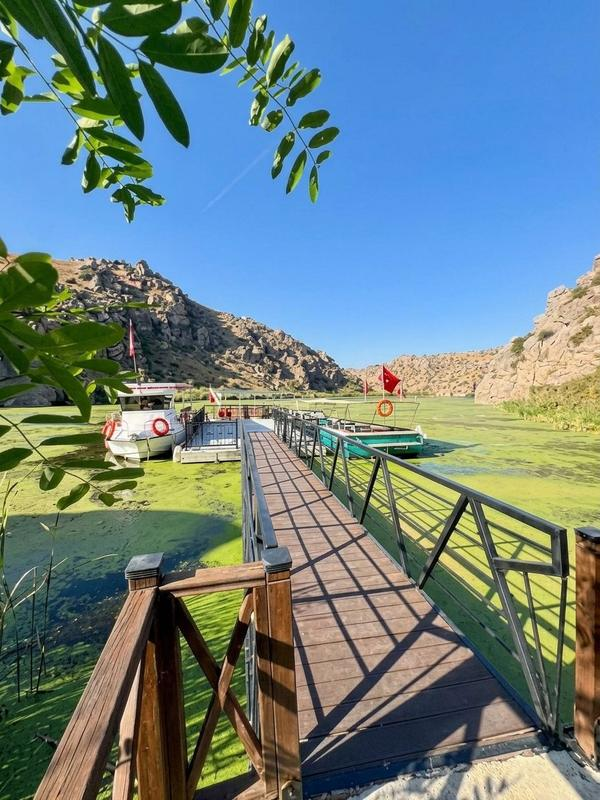
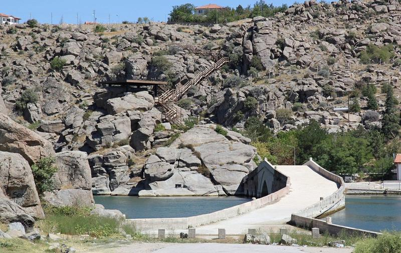
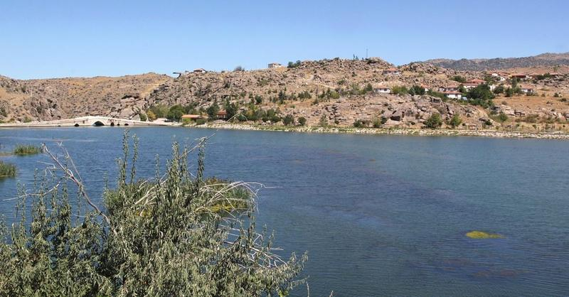
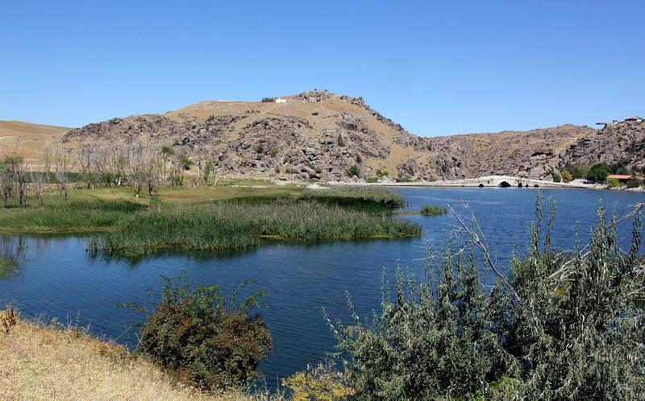
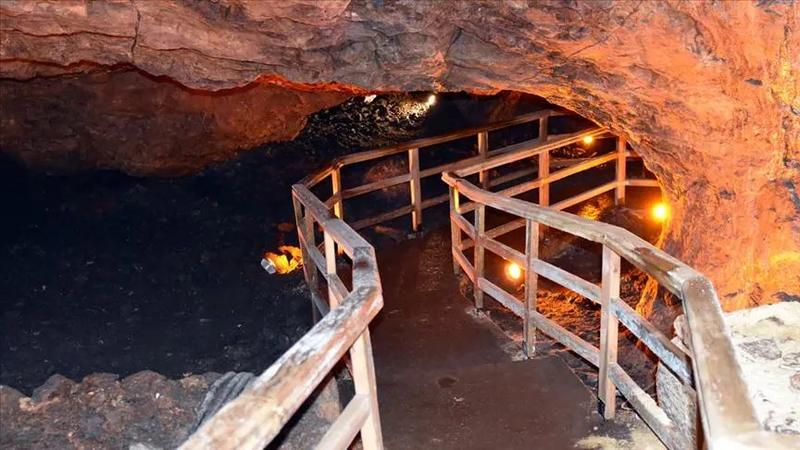
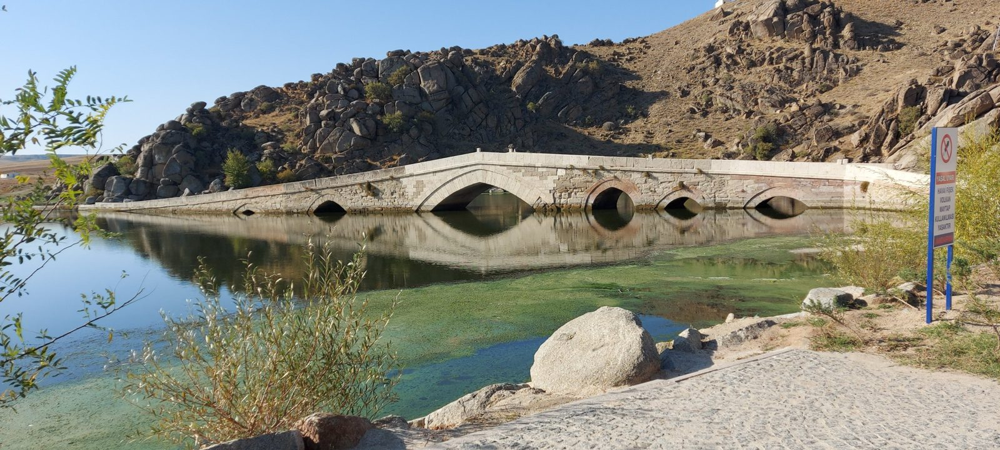
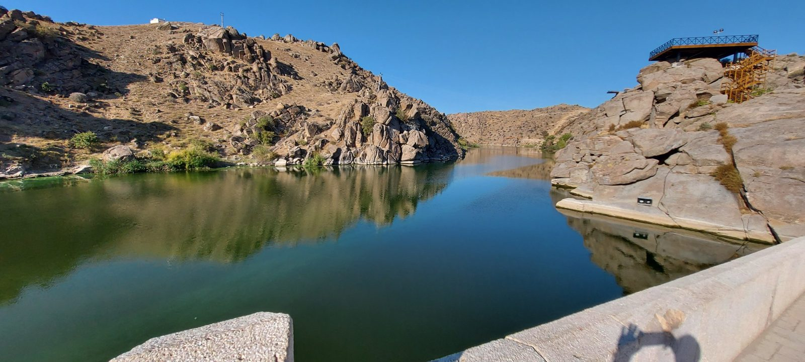

Çeşnigir Kanyonu Mesire Alanı
Kırıkkale Valiliği'nin 2019-2020'de yaklaşık 500 bin metrekarelik alanda düzenlediği kanyon: tarihi köprü, dinlenme ve piknik alanları, göl kenarında yürüyüş yolları.
Fotoğraf: Egeasln, CC BY-SA 4.0Kırıkkale'nin Keskin ilçesinde, Ankara'dan günübirlik gidilebilen tarihi köprü, kanyon ve göl kıyısı.
Köprüköy, Kızılırmak üzerindeki Kapulukaya Baraj Gölü'nün doğu kıyısında bir köydür. 13. yüzyıldan kalma Çeşnigir Köprüsü, onu çevreleyen Çeşnigir Kanyonu mesire alanı, cam zeminli seyir terası ve tekne turlarıyla Kırıkkale'de ve Ankara çevresinde bir günde gezilebilecek yerlerden biridir.
Haritadaki bir noktaya farenizle gelin, fotoğrafı görünsün; tıklayınca o yerin bilgilerine gidersiniz.
Harita şu an açılamadı. Google Haritalar'da açın.


Kırıkkale Valiliği'nin 2019-2020'de yaklaşık 500 bin metrekarelik alanda düzenlediği kanyon: tarihi köprü, dinlenme ve piknik alanları, göl kenarında yürüyüş yolları.
Fotoğraf: Egeasln, CC BY-SA 4.0
Kanyona bakan iki seyir terası var; biri cam zeminli. Kızılırmak'ı ve karşı kıyıdaki tarlaları yukarıdan görmek için en iyi yer.

Ahşap iskeleden kalkan teknelerle Kızılırmak'ın kayalık kanyonu su üzerinden gezilir.

Kanyon boyunca yaklaşık 6,5 km'lik yürüyüş ve bisiklet yolu. Daha uzun rota Büklükale'den başlar, köprüyü geçip Köprüköy'den Behrek (Böğrek) Dağı eteklerine, Haydar Sultan Türbesi ve Deliler Kuyusu'na uzanır. Yanınıza su ve atıştırmalık alın.
Fotoğraf: Ingeborg Simon, CC BY-SA 3.0
Köyün batısında uzanan göl kıyısı; sazan ve tatlı su levreği avlanır. Sisli sabahlarda vadiyi kaplayan sis görülmeye değer.
Fotoğraf: Ingeborg Simon, CC BY-SA 3.0
Köprünün karşı kıyısında 5 bin yıllık yerleşim. Japon arkeolog Kimiyoshi Matsumura başkanlığında 2009'dan beri kazılıyor; 7 metre yüksekliğinde sur ve 2010'da bulunan Hitit çivi yazılı tablet en bilinen buluntuları.
Fotoğraf: Ingeborg Simon, CC BY-SA 3.0
Keskin'de üç katlı, 285 metrelik mağara; içi yıl boyu 18 derece civarında. Yakınındaki Ceritkale Kanyonu'nda yaklaşık 10 km'lik doğa yürüyüşü yapılabiliyor.


Kaynak: Türkiye Gazetesi · Discover Cappadocia · Vikipedi, Büklükale · CNN Türk
Kırıkkale'nin Keskin ilçesine bağlı Köprüköy'de, Kızılırmak üzerindedir. Keskin'e 25 km, Kırıkkale'ye 37 km, Ankara'ya yaklaşık 113 km uzaklıktadır.
Köprü 13. yüzyılda, Anadolu Selçukluları döneminde yapılmıştır. Ayrıntılar için köyün ve köprünün tarihçesine bakabilirsiniz.
Evet. Köprüköy Ankara'ya yaklaşık 113 km uzaklıktadır; köprü, kanyon, seyir terası ve tekne turu bir günde gezilebilir.
Gün batımında köprü sudaki yansımasıyla birlikte görünür. Sisli sabahlarda vadiyi kaplayan sis de görülmeye değerdir.
Köprünün karşı kıyısındaki Büklükale ören yeri, Keskin'deki Sulu Mağara ve yakınındaki Ceritkale Kanyonu.